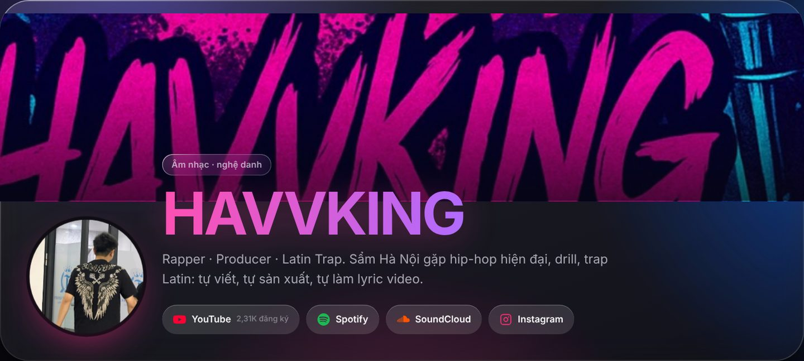

Phạm Việt Hà
Phạm Việt HàMục lục
HAVVKING (đôi khi viết là Havvking) là nghệ danh âm nhạc của Phạm Việt Hà. Dưới tên này, mình là rapper và producer, làm nhạc theo hướng Latin trap, drill và hip-hop hiện đại pha chất xẩm Hà Nội. Nếu bạn vừa nghe một bài của HAVVKING và muốn biết người đứng sau là ai, đây là bài dành cho bạn.

HAVVKING làm nhạc gì?
Lời giới thiệu ngắn nhất trên kênh của mình là: Rapper · Producer · Latin Trap. Cụ thể hơn:
- Xẩm Hà Nội gặp hip-hop hiện đại: chất liệu dân gian của phố cổ đặt trên beat trap.
- Drill: ví dụ "Thuyết Tương Đối (Cench Theory)", một lyrics video theo hướng Vietnamese drill.
- Latin trap: ví dụ "Safe House Tango".
- Ethnic trap: ví dụ "Cô Gái Quàng Khăn Đỏ".
Mình viết riêng về chất nhạc này trong bài Phong cách âm nhạc HAVVKING.
Tự viết, tự sản xuất, tự làm video
Điểm khác của HAVVKING là gần như mọi khâu đều tự làm:
- Viết lời và rap.
- Sản xuất beat: nhiều bản demo và beat được đăng thử trên SoundCloud trước khi phát hành.
- Làm lyric video: nhờ hơn sáu năm quay dựng chuyên nghiệp trước đó.
Khâu thứ ba giải thích vì sao Phạm Việt Hà sau này tự xây cả trình dựng video Bravin và mô hình làm nhạc Micow. Chuyện này có trong bài HAVVKING tự làm lyric video.
Những bài nổi bật của HAVVKING
- Trai Thủ Đô 2026: bản instrumental, khoảng 14,9 nghìn lượt xem trên YouTube.
- Trai Thủ Đô: lyric video chính thức.
- Thuyết Tương Đối (Cench Theory): lyrics video, Vietnamese drill.
- Cô Gái Quàng Khăn Đỏ: official audio, ethnic trap.
- Safe House Tango: lyrics video, Latin trap.
- Lớp Thượng Tầng (High Class): lyrics video.
Danh sách đầy đủ, kèm thể loại và đường dẫn, nằm trong bài Danh sách bài hát HAVVKING.
Nghe HAVVKING ở đâu?
- YouTube: Havvking Official (@havvkingofficial), khoảng 2,31 nghìn người đăng ký.
- Spotify: Havvking.
- SoundCloud: Havvking, khoảng 48 bản gồm demo, beat và bản thử.
- Instagram: @havvking_.
- TikTok: @havvking.
 Đọc thêmNghe nhạc HAVVKING ở đâu? YouTube, Spotify, SoundCloud và Instagram
Đọc thêmNghe nhạc HAVVKING ở đâu? YouTube, Spotify, SoundCloud và Instagram
HAVVKING và Phạm Việt Hà
Ngoài âm nhạc, Phạm Việt Hà là người sáng lập Beta và xây các sản phẩm AI. Hai vai trò này đi cùng nhau: HAVVKING cần làm nhạc và làm video, còn Phạm Việt Hà xây công cụ để làm hai việc đó nhanh hơn. Đọc thêm: Phạm Việt Hà là ai?